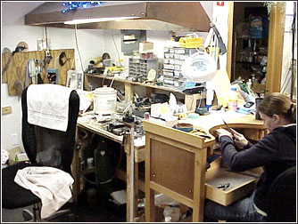

Services
Custom Jewelry Design | Repair and Restoration | Consignment
Services that J. August Jewelry Consignment offers include:
- Custom jewelry design, including redesign of old pieces and new design settings for unset or loose stones
- Jewelry repair and restoration
- Consignment
- Custom engraving
- Appraisal "updates"
- Professional cleaning
- Ring resizing, either smaller or larger
- Sales and excellent service
Custom Jewelry Design
We have a wide variety of one-of-a-kind diamond rings, rare colored gem stones, wedding bands, bracelets, chains, charm bracelets, ID bracelets, earrings, pendants, watches, money clips, pins and more. All of our pieces are customizable. Visit our location in Amherst, New Hampshire to see our current collection - or call today to discuss how J. August Jewelry Consignment can make the jewelry piece of your dreams a reality!
According to the U.S. Department of Labor, "The precise and delicate nature of jewelry work requires finger and hand dexterity, good hand-eye coordination, patience, and concentration. Artistic ability and fashion consciousness are major assets, because jewelry must be stylish and attractive."
This is what you can expect from J. August Jewelry Consignment.
Repair and Restoration
We can often repair and restore your jewelry while you wait. This includes:
- Repair of damaged precious metals
- Chain soldering
- Prong replacement
- Re-tipping and straightening
- Stone setting
- Diamond and color stone replacements
- Pearl and bead stringing
- Reconditioning and refurbishing
According to the U.S. Department of Labor, "The precise and delicate nature of jewelry work requires finger and hand dexterity, good hand-eye coordination, patience, and concentration. Artistic ability and fashion consciousness are major assets, because jewelry must be stylish and attractive."
This is what you can expect from J. August Jewelry Consignment.
Consignment
As New England's largest consignment jewelry store, J. August Jewelry Consignment buys and sell antiques, estate diamonds and jewelry at below wholesale prices. J. August Jewelry Consignment offers the highest prices - paid in cash - for gold and sterling silver, which we use for our repair work.
Not only do we buy and sell fine-quality jewelry pieces, we explain how you can buy and sell your jewelry safely - and intelligently. For example, we explain every option you have with regard to selling a particular jewelry item - whether to us or someone else.
Below is some information about our consignment policies. Please contact us if you have additional questions about consigning your jewelry.
We reserve the option to decline anything we feel is not saleable. Items should be cleaned and polished and not chipped or broken.
Our knowledgeable staff will determine prices with your approval. We welcome any information you have regarding the age and original cost of the item so we can be as fair as possible to you and your customer.
Consignors typically receive 75% for cash or check sales. Consignments are left for up to 90 days, no markdowns.
Once a month, a check and list of items sold are mailed to the consignor.
We recommend scheduling an appointment if you would like to consign any items. Please call ahead to let us know which day you plan on coming.
Why consign with us?
- Avoid the hassle of placing newspaper ads and having strangers walk through your home.
- Garage sales bring low prices and a limited number of shoppers for a short time.
- Auctions cannot guarantee reasonable prices.
- Our location in Amherst, New Hampshire, offers excellent visibility in high traffic locations, 7 days a week. We also publicize online.
- We provide you with a simple agreement form which lists your items and prices.
- We have the experience to price and attractively display your consignments.
- J. August Jewelry Consignment has established a reputation for integrity and customer service.